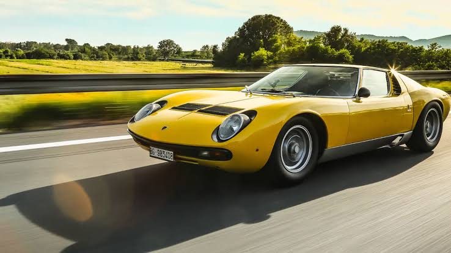
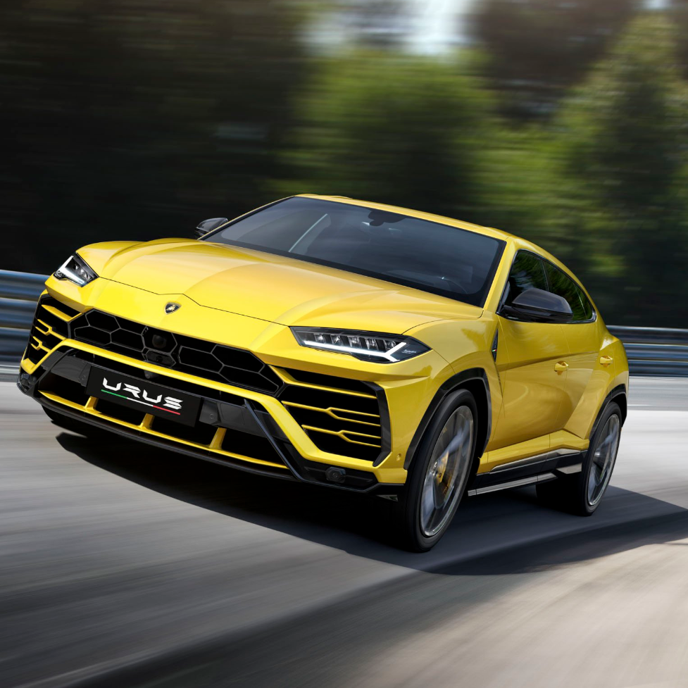
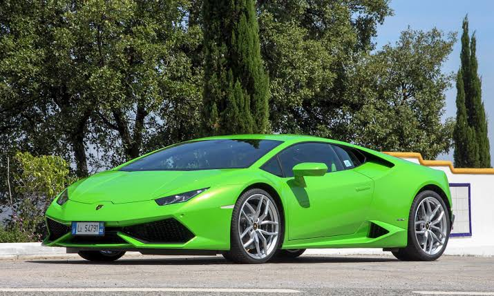

| Company name | Automobili Lamborghini S.p.A. |
|---|---|
| Founder | Ferruccio Lamborghini |
| Founded on | May 1963, Sant'Agata Bolognese, Italy |
| Headquarters | Sant'Agata Bolognese, Italy |
| Parent organization | AUDI |
| Chairman | Stefano Domenicali |
| CEO | Stefano Domenicali |
| No.of production plants | 2 |
| Customer service | 39-051-959-7282 |
The history of ‘Lamborghini Automobili’ officially starts in 1963. Nevertheless, we must consider the distant roots of this event, and they are the roots of Ferruccio Lamborghini. Born in 1916, this capable, impetuous, strong-willed Taurus was the leading character in the foundation of the company and the early phases of its extraordinary history.By the time he decided to build a factory of luxury sports cars, Ferruccio was already a very wealthy man. In the period following World War II, he founded his tractor factory, which he launched with energy and determination, creating a major point of reference in this industry.By the early Sixties, Lamborghini was a powerful and successful man who knew exactly what he wanted, but when he said he would build the best super sports car ever, many people thought he was mad. Constructing that kind of car was viewed as an unexplainable extravagance, a hazardous leap in the dark, and something that would squander his fortune without ever turning a profit.
Ferruccio officially debuted his enterprise "Automobili Ferruccio Lamborghini" at the Turin Motor Show, unveiling a mind-blowing vehicle: the 350 GTV, soon to be acknowledged as a true 12-cylinder masterpiece.In the following year, 1964, the prototype spawned a production vehicle, the 350 GT, soon thereafter followed by the 400 GT, produced in 120 specimens.Lamborghini's enthralling enthusiasm led his mechanics and engineers to conceive increasingly cutting-edge sports cars such as the Miura, the Islero, the Espada, and the Jarama, always able to stun the world at each release.Although the production and the employees constantly grew in numbers, Ferruccio Lamborghini always played a crucial and strategic role within the company. He actually started the now famous tradition of naming the cars after breeds of fighting bulls - gallant, strong and intimidating, just like his cars.Ferruccio Lamborghini died in his estate in 1993, at the age of 76. On the one hundredth anniversary of his birth, the Lamborghini Centenario debuted, paying tribute to the vision, bravery and unique personality of the company's founder.
He started working on this project in late 1962, and by May 1963 he had already founded ‘Automobili Ferruccio Lamborghini’, buying a large plot of land in Sant’Agata Bolognese, about 25 kilometres from Bologna, to build a new large and ultramodern factory. Because of the experience he had gained with his other companies, he was in a position to set up the best facilities for his purpose: a very functional structure that, at the time, was unrivalled in its field. The enormous and well-lit central building was adjacent to the office building, so that the management could constantly monitor the production situation. This was ideal for Lamborghini, who would often roll up his shirt-sleeves and go to work on the cars personally when he saw something that wasn’t done just the way he wanted.
